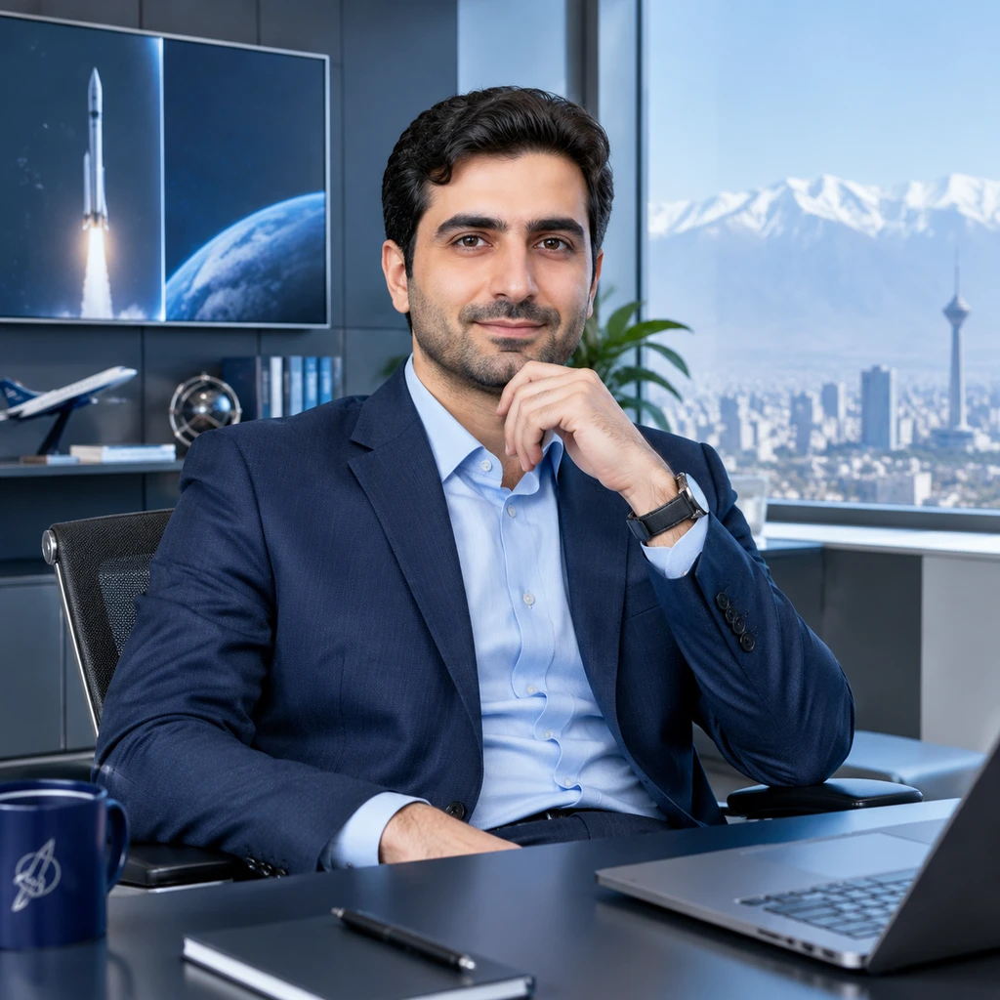

بیش از یک دهه تجربه در سطح راهبری و تصمیمسازی ملی، شامل مدیریت پیگیریهای ویژه حوزه ریاست در معاونت علمی، فناوری و اقتصاد دانشبنیان ریاستجمهوری، هدایت هیئتمدیره صندوقهای فناوری، و مدیریت اجرایی در سازمان هواپیمایی کشوری. پیونددهنده نگرش مهندسی سیستمها با سیاستگذاری نوآوری و مدیریت کلان.

مسئولیتهای کلیدی در نهادهای حاکمیتی، توسعه فناوری و هوانوردی
پایههای آکادمیک و مهندسی سیستمها
فارغالتحصیل با رتبه ممتاز (معدل: ۱۷/۷۹). تمرکز بر مدلسازی و دینامیک پرواز، تحلیل سیستمهای سازه و پیشران، و مدلسازی جامع سیستمها.
پایه قوی در مکانیک سیالات، ترمودینامیک، تحلیل سازهای و طراحی سیستمهای مکانیکی و تأسیساتی.
مسئولیتهای صنفی، دانشجویی و سازمانهای مردمنهاد
نخستین مؤسسه دارای مجوز رسمی از وزارت کشور در حوزه ارتقای همبستگی و اتحاد اقوام ایرانی.
دانشگاه تهران؛ راهاندازی ساختار انجمن علمی، کارگاههای تخصصی، مسابقات و رویدادهای علمی دانشکده.
انجمن هوافضای ایران؛ هماهنگی نشستها، کارگاهها و پنلهای دانشجویی کنفرانس سالانه ملی هوانوردی.
دانشگاه شیراز؛ پیگیری مطالبات دانشجویی، ارتقای خدمات رفاهی و تسهیل تعاملات دانشگاهی.
دانشگاه تهران؛ هماهنگی و ارزیابی دستاوردهای علمی و اختراعات انجمنهای علمی دانشجویی دانشگاه.
آموزشهای تخصصی هوانوردی، حکمرانی دولتی و مدیریت سیستمها بر اساس رزومه رسمی